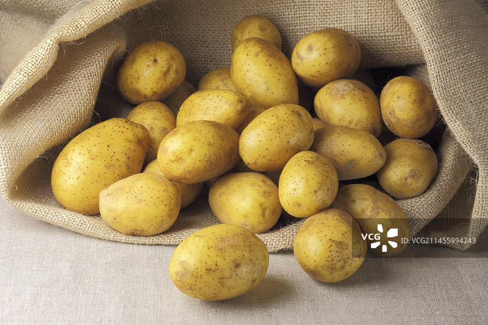
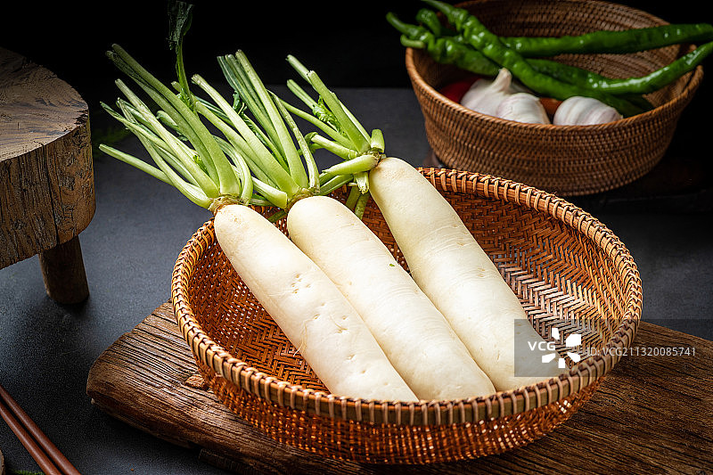
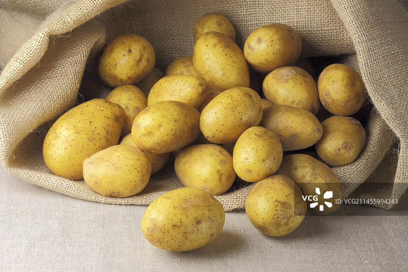
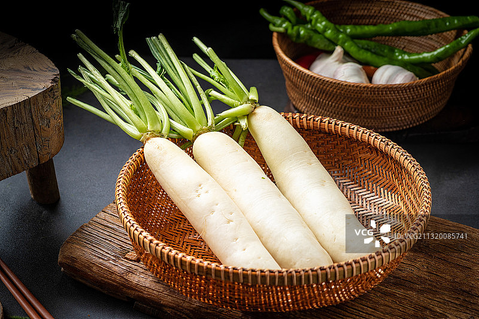
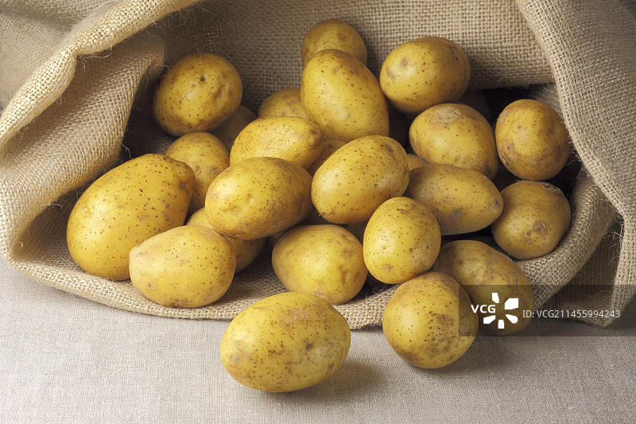
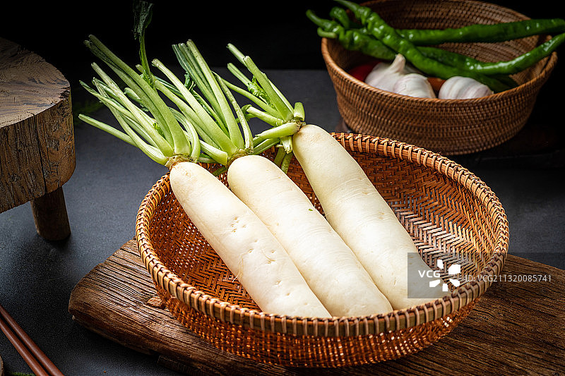

羊杂碎汤是一道具有深厚历史背景的传统美食，尤其在回族等信仰伊斯兰教的民族中广受欢迎。
它起源于清真饮食文化，主要由羊的内脏（如心、肝、肺、肠、肚等）煮成的汤，因其丰富的口感和营养，逐渐成为北方地区冬季驱寒、补充营养的重要食品。
羊杂碎汤的主要食材羊杂属于性温食物，具有燥热之气，适合在寒冷天气食用，能驱寒暖身。
羊杂碎汤富含蛋白质、脂肪、矿物质和维生素，能有效补充人体所需的营养，尤其适合体质虚弱者。
羊杂中的蛋白质成分有助于促进胃黏膜健康，增强脾胃功能。
主料：羊杂（羊心、羊肝、羊肺、羊肠、羊肚等）500克。
辅料：葱、姜、蒜、花椒、八角、香叶、草果、干辣椒等。
配菜：土豆、白萝卜、粉丝、香菜等。
调料：盐、料酒、生抽、白胡椒粉、辣椒油等。


处理羊杂：
将羊杂清洗干净，去除血水和杂质，切成适当大小的块。
羊杂冷水下锅，加入葱段、姜片、料酒，煮开后撇去浮沫，捞出备用。
炒制羊杂：
锅中加油，放入葱姜蒜末爆香，加入羊杂翻炒至表面微黄。
加入适量料酒去腥。
炖煮：
倒入热水或温水，水量没过羊杂，加入花椒、八角、香叶等香料。
大火烧开后转小火慢炖30-40分钟，直到羊杂软烂，汤汁浓郁。
调味与配菜：
加入盐、白胡椒粉调味。
加入土豆、白萝卜等配菜，煮至熟透。
出锅装盘：
撒上香菜末、葱花，根据个人口味加入辣椒油。
清洗羊杂：羊杂需反复清洗，去除血水和杂质，可加入淀粉或醋辅助清洗。
炖煮时间：羊杂需炖煮至软烂，汤汁浓郁，这样口感更佳。
调料选择：避免使用酱油、蚝油等深色调料，以免破坏羊杂的鲜味。
火候控制：炖煮时火候不宜过大，以免汤汁煮干。
配菜选择：可根据个人口味选择不同的配菜，如土豆、白萝卜、粉丝等。